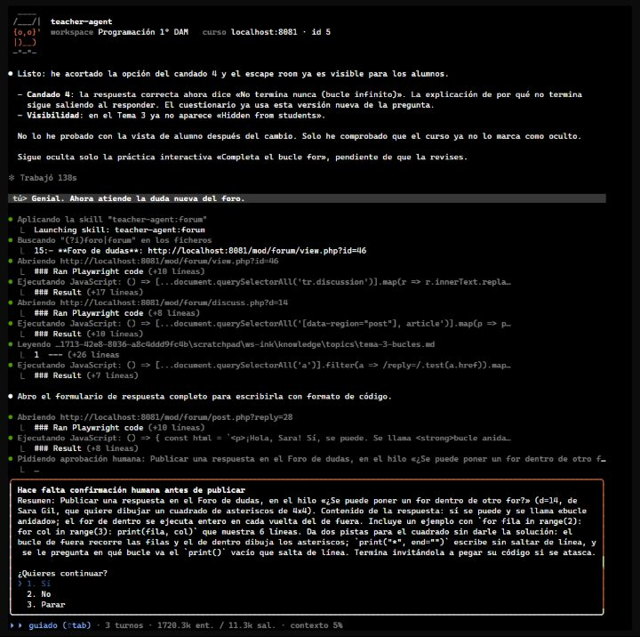

Tu curso de Moodle, con un asistente que pregunta antes de publicar
teacher-agent entra con tu cuenta de profesor, corrige entregas, atiende el foro, crea actividades y te resume cómo va la clase. Nada llega a tus alumnos sin tu permiso.
Software libre (licencia MIT). Funciona con tu suscripción de Claude.
Una semana con teacher‑agent
Le pides las cosas como a un compañero, en una conversación. Él trabaja en tu Moodle como lo harías tú.
-
Lunes
Corrige las entregas de la tarea
Aplica tu rúbrica y tus criterios, escribe una retroalimentación que explica qué falló y cómo mejorarlo, y te enseña la nota de cada alumno antes de guardarla.
«Corrige la Tarea 2 con la rúbrica del tema» -
Martes
Atiende el foro
Encuentra las dudas sin responder, contesta en el tono que elegiste y te avisa cuando la misma duda se repite porque los apuntes se quedan cortos.
«¿Hay algo nuevo en el foro?» -
Miércoles
Prepara una actividad
Un cuestionario, unos apuntes, una práctica o algo más atrevido, como un escape room. La prueba oculta en Moodle y te la enseña antes de que la vean tus alumnos.
«Crea un escape room de repaso de bucles en el Tema 3» -
Jueves
Te resume cómo va la clase
Entregas, notas, quién se está quedando atrás y qué temas cuestan más, a partir de lo que hay en tu curso.
«¿Cómo va la clase en general?»
Tú decides qué se publica
Trabaja con tu cuenta en tu curso real, así que está hecho para no dar pasos por su cuenta donde tus alumnos lo verían.
Te pide permiso
Antes de guardar una nota, responder en el foro o publicar un recurso, te enseña exactamente qué va a publicar y espera tu sí. Si dices que no, no lo publica.
Prueba antes de mostrar
Lo que crea lo sube primero oculto, lo prueba en Moodle como profesor y te pide permiso otra vez para mostrarlo. Lo que quede oculto te lo recuerda al cerrar.
Se queda en tu curso
Tiene instrucciones de no borrar nada, no tocar matrículas ni la configuración de Moodle y no entrar en otros cursos. Tu contraseña nunca pasa por el modelo.
Recuerda tu curso
Va tomando apuntes: tus criterios de corrección, las rúbricas, las dudas que se repiten, cómo evoluciona la clase. En la siguiente sesión empieza por ahí, sin tener que volver a mirarlo todo en Moodle.
Son archivos de texto en la carpeta de tu curso, que puedes abrir y corregir con cualquier editor. No guarda fichas de alumnos concretos, solo tendencias de la clase.
Habla tu idioma, publica en el del curso
Sus menús y avisos están en español, inglés, francés y alemán, y te responde en el idioma en que le escribas.
Lo que publica en Moodle sigue siempre el idioma de tu curso: puedes hablarle en inglés de un curso en español y las respuestas del foro saldrán en español.
Así se ve de verdad
Una sesión real en un Moodle de pruebas: acaba de publicar un escape room y ahora pide permiso para responder en el foro.


Instálalo en tres pasos
En Windows, Mac o Linux. No hace falta saber programar.
-
Instala Google Chrome
Si no lo tienes ya, desde google.com/chrome. teacher-agent lo usa para entrar en Moodle.
-
Instala Node.js
La versión LTS desde nodejs.org, con las opciones por defecto.
-
Instala teacher-agent
Abre una terminal (PowerShell en Windows, Terminal en Mac), pega esta línea y pulsa Intro:
npm install -g https://github.com/falkenslab/teacher-agent/releases/latest/download/teacher-agent.tgzDespués, escribe
teacher-agent initen la carpeta que quieras usar para tu curso y responde a sus preguntas.
Necesitas un curso de Moodle en el que tengas rol de profesor y una suscripción de Claude Pro o Max. La guía paso a paso lo explica todo con ejemplos.
Preguntas frecuentes
¿Cuánto cuesta?
teacher-agent es gratuito y de código abierto. Lo que hace funcionar al asistente es tu suscripción de Claude (Pro o Max).
¿Funciona con el Moodle de mi centro?
Trabaja con el Moodle que ya usas, desde el navegador y con tu cuenta de profesor: no hay que instalar nada en el servidor. Al configurarlo, puede mirar (sin cambiar nada) qué tipos de actividad y de pregunta admite tu Moodle.
¿Puede publicar algo sin que me dé cuenta?
En el chat, antes de guardar una nota, responder en el foro o publicar contenido, te pide permiso con un resumen de lo que va a publicar. Si intenta publicar sin haberlo pedido, lo detiene y te pregunta.
¿Qué pasa con los datos de mis alumnos?
Lee lo que tú verías en Moodle para hacer su trabajo, pero en sus apuntes no guarda fichas de alumnos concretos, solo tendencias de la clase. Tu contraseña de Moodle nunca se envía al modelo.
¿Puedo darle mis propias instrucciones?
Sí. Escribe en un archivo instructions.md de la carpeta del curso lo que quieras que tenga siempre en cuenta: «puntúa sobre 10», «sé breve en el foro», «la ortografía cuenta un 10 %».